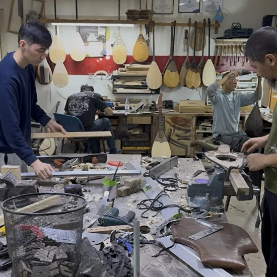

О проекте
Как современные технологии объединились с древним искусством создания казахских музыкальных инструментов.
Искусство,
рожденное в сердце
«Каждая созданная нами домбра — это живой голос казахской степи. Меня зовут Айым Эрнст. Я объединила свой многолетний опыт управления современными IT-продуктами с безграничной любовью к народным музыкальным традициям».
Наша главная цель — отказаться от безликого массового конвейера в пользу штучных шедевров. Мы бережно соединяем вековые секреты мастеров с инновационными методами обработки материалов, чтобы наши инструменты радовали вас безупречным звучанием десятилетиями.

Путь развития
Рождение мастерской
Начало традиции
Наши мастера создают первые профессиональные домбры в небольшом алматинском цеху, фокусируясь исключительно на акустической чистоте звука и ручном труде.
Эпоха инноваций
Швейцарские технологии сушки
Мы расширили команду и внедрили передовые технологии сушки древесины, которые позволили сохранить геометрию и звонкость деки при любых перепадах влажности.
Современный виток
Интерактивный конфигуратор
Интеграция 3D-конфигуратора под руководством Айым Эрнст. Теперь ценители традиционной музыки по всему миру могут собрать инструмент своей мечты онлайн.
Золотые руки мастерской
Мастер Серик
Акустика и выбор резонансного дерева
«Звук домбры рождается глубоко внутри дерева. Я чувствую уникальный характер и плотность каждой заготовки еще до того, как она попадет на сборочный стол».
Мастер Канат
Инкрустация, резьба и финальный декор
«Каждый узор на домбре — это древнее послание с глубоким смыслом. Я бережно высекаю каждую линию декора, чтобы инструмент выглядел благородно и престижно».
Как рождается звучание
Ангарская сосна
Верхняя дека
Дарит инструменту кристально чистые высокие частоты, невероятную громкость и отзывчивость на каждое легкое касание.
Горный клён
Задний корпус
Обеспечивает невероятную плотность, насыщенные средние частоты, бархатную глубину звука и отличную прочность.
Черный орех
Детали и шпон
Придает звучанию благородный бархатный тембр и неповторимый темно-шоколадный древесный рисунок на корпусе.
Бук и береза
Гриф и голова
Обеспечивают стабильное натяжение струн, безупречную ровность грифа и полное отсутствие искривления со временем.
Хотите обсудить дизайн?
Свяжитесь с нами прямо сейчас! Мы с удовольствием поможем вам подобрать материалы, определиться со стилем и создать по-настоящему личный инструмент.
Звонок мастеру
+7 (775) 522 69 01